Hierarchical Modelling of Species Communities (HMSC) is a model-based approach for analyzing community ecological data ((Ovaskainen et al. 2017)). The obligatory data for HMSC-analyses includes a matrix of species occurrences or abundances and a matrix of environmental covariates. Additional and optional data include information about species traits and phylogenetic relationships, and information about the spatiotemporal context of the sampling design. HMSC partitions variation in species occurrences to components that relate to environmental filtering, species interactions, and random processes. Hmsc yields inference both at species and community levels.
This package and the package jSDM allow to fit the models defined below, so we can compare the results obtained by each of them on different data-sets.
1 Models definition
1.1 Binomial model for presence-absence data
We consider a latent variable model (LVM) to account for species co-occurrence (Warton et al. 2015) on all sites .
\[y_{ij} \sim \mathcal{B}inomial(t_i, \theta_{ij})\]
\[ \mathrm{g}(\theta_{ij}) = X_i\beta_j + W_i\lambda_j \]
- \(\theta_{ij}\): occurrence probability of the species \(j\) on site \(i\).
- \(t_i\): number of visits at site \(i\)
- \(\mathrm{g}(\cdot)\): Link function (eg. logit or probit).
The inference method is able to handle only one visit by site with a probit link function so \(\forall i, \ t_i=1\) and \[y_{ij} \sim \mathcal{B}ernoulli(\theta_{ij})\].
\(X_i\): Vector of explanatory variables for site \(i\) with \(X_i=(x_i^1,\ldots,x_i^p)\in \mathbb{R}^p\) where \(p\) is the number of bio-climatic variables considered (including intercept \(\forall i, x_i^1=1\)).
\(\beta_j\): Effects of the explanatory variables on the probability of presence of species \(j\) including species intercept (\(\beta_{0j}\)). We use a prior distribution \(\beta_j \sim \mathcal{N}_p(0,\Sigma_{\beta})\) with \(\Sigma_{\beta}\) a specified diagonal matrix of size \(p \times p\).
\(W_i\): Vector of random latent variables for site \(i\). \(W_i \sim N(0, 1)\). The number of latent variables \(q\) must be fixed by the user (default to \(q=2\)).
\(\lambda_j\): Effects of the latent variables on the probability of presence of species \(j\) also known as “factor loadings” (Warton et al. 2015). We use the following prior distribution in the
jSDMpackage to constraint values to \(0\) on upper diagonal and to strictly positive values on diagonal, for \(j=1,\ldots,J\) and \(l=1,\ldots,q\) : \[\lambda_{jl} \sim \begin{cases} \mathcal{N}(0,1) & \text{if } l < j \\ \mathcal{N}(0,1) \text{ left truncated by } 0 & \text{if } l=j \\ P \text{ such as } \mathbb{P}(\lambda_{jl} = 0)=1 & \text{if } l>j \end{cases}\].
This model is equivalent to a multivariate GLMM \(\mathrm{g}(\theta_{ij}) = X_i.\beta_j + u_{ij}\), where \(u_{ij} \sim \mathcal{N}(0, \Sigma)\) with the constraint that the variance-covariance matrix \(\Sigma = \Lambda \Lambda^{\prime}\), where \(\Lambda\) is the full matrix of factor loadings, with the \(\lambda_j\) as its columns.
Using this model we can compute the full species residual correlation matrix \(R=(R_{ij})^{i=1,\ldots, nspecies}_{j=1,\ldots, nspecies}\) from the covariance in the latent variables such as : \[\Sigma_{ij} = \lambda_i .\lambda_j^T\], then we compute correlations from covariances : \[R_{i,j} = \frac{\Sigma_{ij}}{\sqrt{\Sigma _{ii}\Sigma _{jj}}}\].
1.2 Poisson model for abundance data
Referring to the models used in the articles (Hui 2016), we define the following model to account for species abundances on all sites.
\[y_{ij} \sim \mathcal{P}oisson(\theta_{ij})\].
\[ \mathrm{log}(\theta_{ij}) = \beta_{0j} + X_i\beta_j + W_i\lambda_j \]
2 Data-sets
2.1 Data simulation
We start by simulating the data-set that we will then analyze among real data-sets.
We generate a data-set, following the previous model, with \(300\) sites, \(100\) species and as parameters :
#==================
#== Data simulation
#==================
#= Number of species
nsp <- 100
#= Number of sites
nsite <- 300
#= Number of latent variables
nl <- 2
#= Set seed for repeatability
seed <- 123
set.seed(seed)
# Ecological process (suitability)
x1 <- rnorm(nsite,0,1)
x2 <- rnorm(nsite,0,1)
X <- cbind(rep(1,nsite),x1,x2)
np <- ncol(X)
#= Latent variables W
W <- matrix(rnorm(nsite*nl,0,1), nrow=nsite, ncol=nl)
#= Fixed species effect beta
beta.target <- t(matrix(runif(nsp*np,-2,2), byrow=TRUE, nrow=nsp))
#= Factor loading lambda
mat <- t(matrix(runif(nsp*nl,-2,2), byrow=TRUE, nrow=nsp))
diag(mat) <- runif(nl,0,2)
lambda.target <- matrix(0,nl,nsp)
lambda.target[upper.tri(mat,diag=TRUE)] <- mat[upper.tri(mat, diag=TRUE)]
# Simulation of response data with probit link
probit_theta <- X %*% beta.target + W %*% lambda.target
theta <- pnorm(probit_theta)
e <- matrix(rnorm(nsp*nsite,0,1),nsite,nsp)
# Latent variable Z
Z_true <- probit_theta + e
# Presence-absence matrix Y
Y <- matrix(NA, nsite,nsp)
for (i in 1:nsite){
for (j in 1:nsp){
if ( Z_true[i,j] > 0) {Y[i,j] <- 1}
else {Y[i,j] <- 0}
}
}2.2 Data-sets description
Among the following datasets, the presence-absence data are from the (Wilkinson et al. 2019) article in which they are used to compare joint species distribution models for presence-absence data, the dataset that records the presence or absence of birds is from the (Kéry & Schmid 2006) article and the mites abundance data-set is from the (Borcard & Legendre 1994) article.
#> ##
#> ## jSDM R package
#> ## For joint species distribution models
#> ## https://ecology.ghislainv.fr/jSDM
#> ##
#> Loading required package: coda
#> The legacy packages maptools, rgdal, and rgeos, underpinning the sp package,
#> which was just loaded, will retire in October 2023.
#> Please refer to R-spatial evolution reports for details, especially
#> https://r-spatial.org/r/2023/05/15/evolution4.html.
#> It may be desirable to make the sf package available;
#> package maintainers should consider adding sf to Suggests:.
#> The sp package is now running under evolution status 2
#> (status 2 uses the sf package in place of rgdal)| Simulated | Mosquitos | Eucalypts | Frogs | Fungi | Birds | Mites | |
|---|---|---|---|---|---|---|---|
| data type | presence-absence | presence-absence | presence-absence | presence-absence | presence-absence | presence-absence | abundance |
| distribution | bernoulli | bernoulli | bernoulli | bernoulli | bernoulli | bernoulli | poisson |
| n.site | 300 | 167 | 455 | 104 | 438 | 266 | 70 |
| n.species | 100 | 16 | 12 | 9 | 11 | 110 | 30 |
| n.latent | 2 | 2 | 2 | 2 | 2 | 2 | 2 |
| n.X.coefs | 3 | 14 | 8 | 4 | 13 | 4 | 12 |
| n.obs | 30000 | 2672 | 5460 | 936 | 4818 | 29260 | 2100 |
| n.param | 1400 | 757 | 1485 | 366 | 1479 | 1458 | 630 |
| n.mcmc | 15000 | 15000 | 15000 | 15000 | 15000 | 15000 | 15000 |

|

|

|

|

|

|
3 Package Hmsc
In a first step, we fit joint species distribution models from previous data-sets using the Hmsc() function from package of the same name whose features are developed in the article (Ovaskainen et al. 2017).
3.1 Simulated dataset
We fit a binomial joint species distribution model, including latent variables, from the simulated dataset using the Hmsc() function to perform binomial probit regression.
library(Hmsc)
studyDesign <- data.frame(sample=as.factor(1:nrow(Y)))
rL <- HmscRandomLevel(units=studyDesign$sample)
rL <- setPriors(rL, nfMax=2, nfMin=2)
T1<-Sys.time()
mod <- Hmsc(Y=Y, XData=as.data.frame(X), XFormula=~x1+x2, XScale = FALSE,
distr="probit", studyDesign=studyDesign,
ranLevels=list("sample"=rL))
mod_Hmsc_sim <- sampleMcmc(mod, thin=5, samples=1000, transient = 10000, nChains = 1)
T2<-Sys.time()
T_Hmsc_sim=difftime(T2,T1, units="secs")
# Predicted probit(theta)
theta_latent_sim <- apply(computePredictedValues(mod_Hmsc_sim),c(1,2),mean)
probit_theta_latent_sim <- qnorm(theta_latent_sim)
# RMSE
#res <- evaluateModelFit(hM=mod_Hmsc_sim, predY=preds)
SE=(theta-theta_latent_sim)^2
RMSE_Hmsc_sim=sqrt(sum(SE/(nsite*nsp)))
# Deviance
logL=0
for (i in 1:nsite){
for (j in 1:nsp){
logL=logL + dbinom(Y[i,j],1,theta_latent_sim[i,j],1)
}
}
Deviance_Hmsc_sim <- -2*logL
save(np, nl, nsp, nsite, beta.target, lambda.target, X, W, theta, probit_theta, Z_true, Y, T_Hmsc_sim,
mod_Hmsc_sim, rL, probit_theta_latent_sim,
RMSE_Hmsc_sim, Deviance_Hmsc_sim,
file="jSDM_Hmsc_cache/Hmsc_simulation.RData")We visually evaluate the convergence of MCMCs by representing the trace and density a posteriori of some estimated parameters and we evaluate the accuracy of the estimated parameters by plotting them against the parameters used to simulate the data-set.
load(file="jSDM_Hmsc_cache/Hmsc_simulation.RData")
codaObject <- Hmsc::convertToCodaObject(mod_Hmsc_sim, start=1)
# Trace and density plot of MCMC chains of parameters to visually evaluate convergence
## Fixed species effect beta
par(mfrow=c(ncol(X),2))
for(j in 1:2){
MCMC.betaj <- codaObject$Beta[[1]][,grepl(paste0("sp0",j),colnames(codaObject$Beta[[1]]))]
for(p in 1:ncol(X)){
coda::traceplot(MCMC.betaj[,p],
main=paste0("Trace of ", colnames(MCMC.betaj)[p]))
coda::densplot(MCMC.betaj[,p],
main=paste0("Density of ", colnames(MCMC.betaj)[p]))
abline(v=beta.target[p,j],col='red')
}
}
Hmsc_beta <- t(getPostEstimate(hM=mod_Hmsc_sim, parName='Beta')$mean)
## factor loadings lambda_j
par(mfrow=c(2,2))
for(j in 1:2){
MCMC.lambdaj <- codaObject$Lambda[[1]][,grepl(paste0("sp0",j),colnames(codaObject$Lambda[[1]][[1]]))][[1]]
for(l in 1:rL$nfMax){
coda::traceplot(MCMC.lambdaj[,l],
main=paste0("Trace of ", colnames(MCMC.lambdaj)[l]))
coda::densplot(MCMC.lambdaj[,l],
main=paste0("Density of ", colnames(MCMC.lambdaj)[l]))
abline(v=lambda.target[l,j],col='red')
}
}
Hmsc_lambda <- t(getPostEstimate(hM=mod_Hmsc_sim, parName='Lambda', r=1)$mean)
par(mfrow=c(1,2))
plot(t(beta.target), Hmsc_beta,
xlab="obs", ylab="fitted", main="Fixed species effect beta")
abline(a=0,b=1,col='red')
plot(t(lambda.target),Hmsc_lambda,
xlab="obs", ylab="fitted", main="Loading factors lambda")
abline(a=0,b=1,col='red')
## Latent variable W
Hmsc_lvs <- getPostEstimate(hM=mod_Hmsc_sim, parName='Eta', r=1)$mean
par(mfrow=c(1,2))
for (l in 1:nl) {
plot(W[,l],Hmsc_lvs[,l],
main=paste0("Latent variable W_", l),
xlab="obs", ylab="fitted")
abline(a=0,b=1,col='red')
}
## Prediction
# probit_theta_latent
par(mfrow=c(1,1))
plot(probit_theta,probit_theta_latent_sim,
main="probit(theta)", xlab ="obs", ylab="fitted")
abline(a=0,b=1,col='red')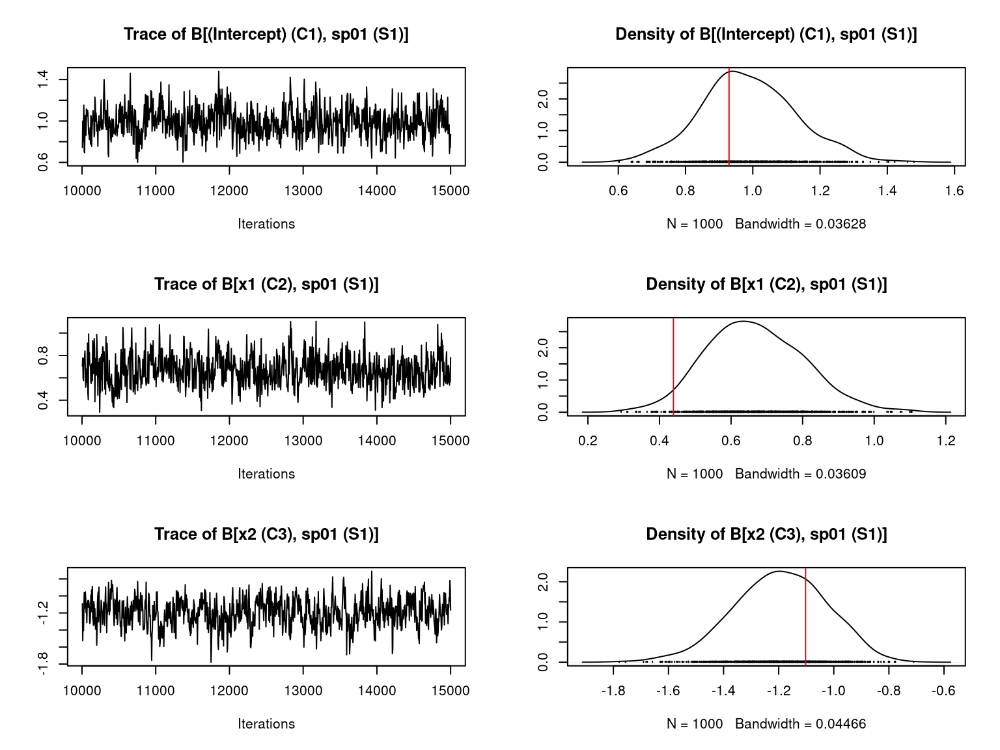
 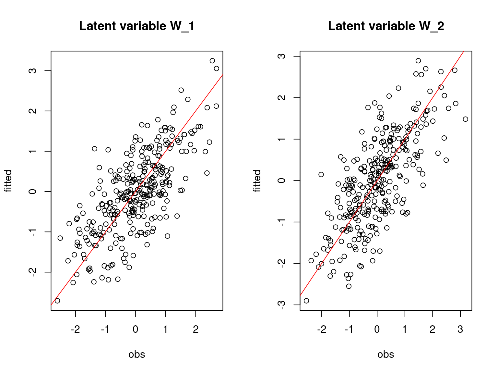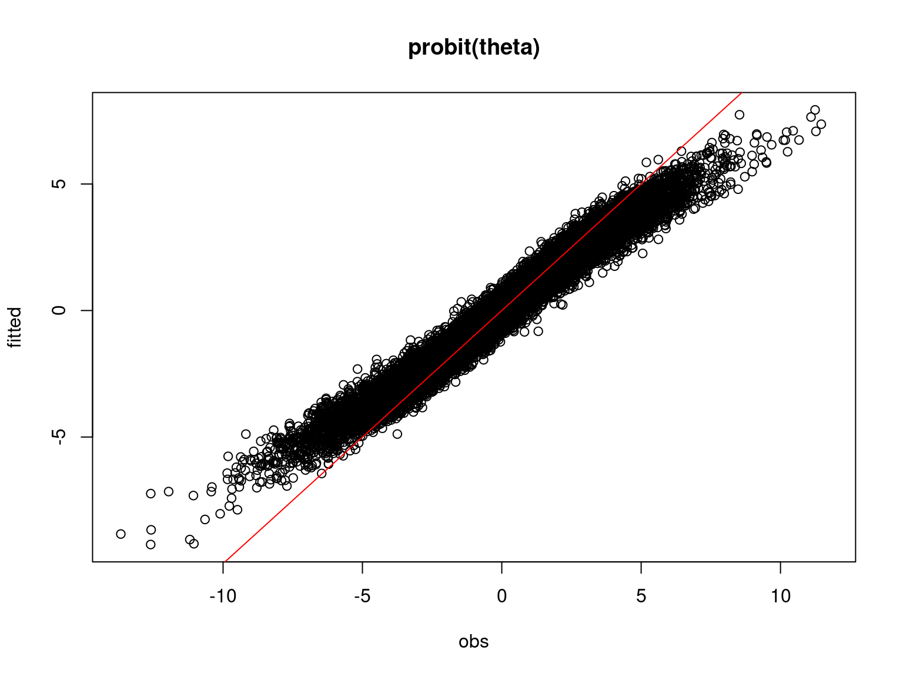
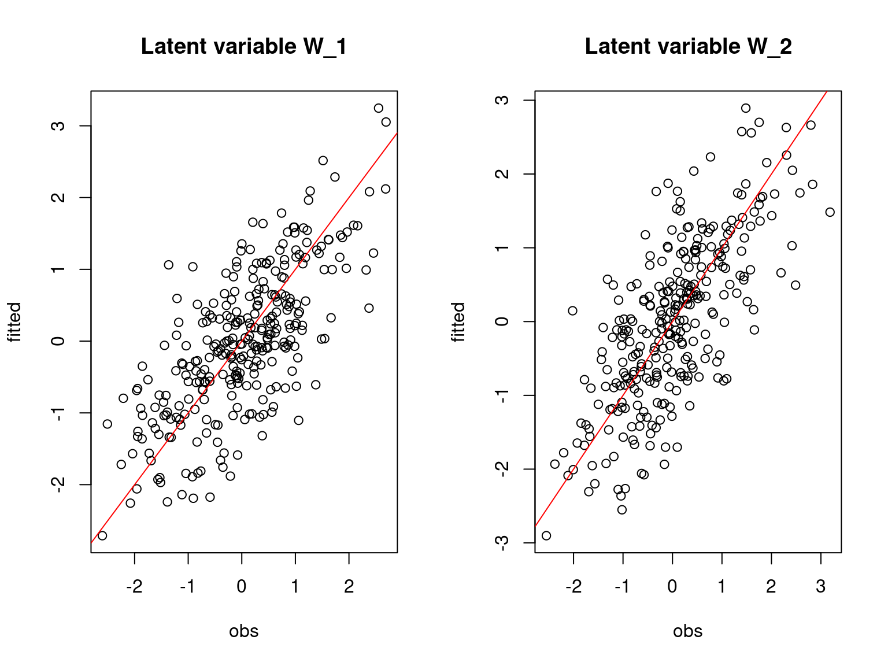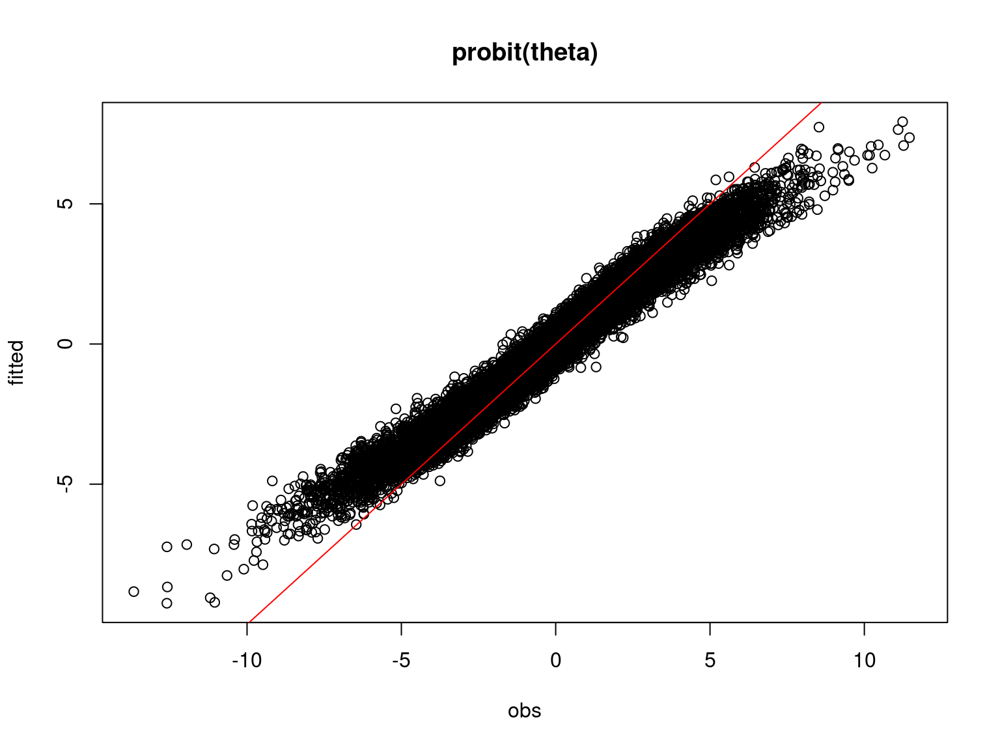
Overall, the traces and the densities of the parameters indicate the convergence of the algorithm. Indeed, we observe on the traces that the values oscillate around averages without showing an upward or downward trend and we see that the densities are quite smooth and for the most part of Gaussian form.
On the above figures, the estimated parameters are close to the expected values if the points are near the red line representing the identity function (\(y=x\)).
3.2 Mosquitos dataset
We fit a binomial joint species distribution model, including latent variables, from the mosquitos dataset using Hmsc() function to perform binomial probit regression.
# Import center and reduce Mosquito dataset
data(mosquitos, package="jSDM")
head(mosquitos)
Env_Mosquitos <- mosquitos[,17:29]
Env_Mosquitos <- cbind(scale(Env_Mosquitos[,1:4]), Env_Mosquitos[,5:13])
PA_Mosquitos <- mosquitos[,1:16]
# Define the model
studyDesign <- data.frame(sample=as.factor(1:nrow(PA_Mosquitos)))
rL <- HmscRandomLevel(units=studyDesign$sample)
rL <- setPriors(rL, nfMax=2, nfMin=2)
# Fit the model
T1<-Sys.time()
mod <- Hmsc(Y=PA_Mosquitos, XData=as.data.frame(Env_Mosquitos), XFormula=~., XScale = FALSE,
distr="probit", studyDesign=studyDesign,
ranLevels=list("sample"=rL))
mod_Hmsc_Mosquitos <- sampleMcmc(mod, thin=5, samples=1000, transient = 10000, nChains = 1)
T2<-Sys.time()
T_Hmsc_Mosquitos=difftime(T2,T1, units="secs")
# Predicted probit(theta)
theta_latent_Mosquitos <- apply(computePredictedValues(mod_Hmsc_Mosquitos),c(1,2),mean)
probit_theta_latent_Mosquitos <- qnorm(theta_latent_Mosquitos)
# Deviance
logL=0
for (i in 1:nrow(PA_Mosquitos)){
for (j in 1:ncol(PA_Mosquitos)){
logL=logL + dbinom(PA_Mosquitos [i,j],1,theta_latent_Mosquitos[i,j],1)
}
}
Deviance_Hmsc_Mosquitos <- -2*logL
save(T_Hmsc_Mosquitos, mod_Hmsc_Mosquitos,
probit_theta_latent_Mosquitos, Deviance_Hmsc_Mosquitos,
file="jSDM_Hmsc_cache/Hmsc_Mosquitos.RData")3.3 Eucalypts dataset
We fit a binomial joint species distribution model, including latent variables, from the eucalypts dataset using Hmsc() function to perform binomial probit regression.
# Import center and reduce Eucalypts dataset
data(eucalypts, package="jSDM")
head(eucalypts)
Env_Eucalypts <- cbind(scale(eucalypts[,c("Rockiness","VallyBotFlat","PPTann", "cvTemp","T0")]),eucalypts[,c("Sandiness","Loaminess")])
PA_Eucalypts <- eucalypts[,1:12]
Env_Eucalypts <- Env_Eucalypts[rowSums(PA_Eucalypts) != 0,]
# Remove sites where none species was recorded
PA_Eucalypts<- PA_Eucalypts[rowSums(PA_Eucalypts) != 0,]
# Define the model
studyDesign <- data.frame(sample=as.factor(1:nrow(PA_Eucalypts)))
rL <- HmscRandomLevel(units=studyDesign$sample)
rL <- setPriors(rL, nfMax=2, nfMin=2)
# Fit the model
T1<-Sys.time()
mod <- Hmsc(Y=PA_Eucalypts, XData=as.data.frame(Env_Eucalypts), XFormula=~., XScale = FALSE,
distr="probit", studyDesign=studyDesign,
ranLevels=list("sample"=rL))
mod_Hmsc_Eucalypts <- sampleMcmc(mod, thin=5, samples=1000, transient = 10000, nChains = 1)
T2<-Sys.time()
T_Hmsc_Eucalypts=difftime(T2,T1, units="secs")
# Predicted probit(theta)
theta_latent_Eucalypts <- apply(computePredictedValues(mod_Hmsc_Eucalypts),c(1,2),mean)
probit_theta_latent_Eucalypts <- qnorm(theta_latent_Eucalypts)
# Deviance
logL=0
for (i in 1:nrow(PA_Eucalypts)){
for (j in 1:ncol(PA_Eucalypts)){
logL=logL + dbinom(PA_Eucalypts[i,j],1,theta_latent_Eucalypts[i,j],1)
}
}
Deviance_Hmsc_Eucalypts <- -2*logL
save(T_Hmsc_Eucalypts, mod_Hmsc_Eucalypts,
probit_theta_latent_Eucalypts, Deviance_Hmsc_Eucalypts,
file="jSDM_Hmsc_cache/Hmsc_Eucalypts.RData")3.4 Frogs dataset
We fit a binomial joint species distribution model, including latent variables, from the frogs dataset using Hmsc() function to perform binomial probit regression.
# Import center and reduce Frogs dataset
data(frogs, package="jSDM")
head(frogs)
Env_Frogs <- cbind(scale(frogs[,"Covariate_1"]),frogs[,"Covariate_2"],
scale(frogs[,"Covariate_3"]))
colnames(Env_Frogs) <- colnames(frogs[,1:3])
PA_Frogs <- frogs[,4:12]
# Define the model
studyDesign <- data.frame(sample=as.factor(1:nrow(PA_Frogs)))
rL <- HmscRandomLevel(units=studyDesign$sample)
rL <- setPriors(rL, nfMax=2, nfMin=2)
# Fit the model
T1<-Sys.time()
mod <- Hmsc(Y=PA_Frogs, XData=as.data.frame(Env_Frogs), XFormula=~., XScale = FALSE,
distr="probit", studyDesign=studyDesign,
ranLevels=list("sample"=rL))
mod_Hmsc_Frogs <- sampleMcmc(mod, thin=5, samples=1000, transient = 10000, nChains = 1)
T2<-Sys.time()
T_Hmsc_Frogs=difftime(T2,T1, units="secs")
# Predicted probit(theta)
theta_latent_Frogs <- apply(computePredictedValues(mod_Hmsc_Frogs),c(1,2),mean)
probit_theta_latent_Frogs <- qnorm(theta_latent_Frogs)
# Deviance
logL=0
for (i in 1:nrow(PA_Frogs)){
for (j in 1:ncol(PA_Frogs)){
logL=logL + dbinom(PA_Frogs [i,j],1,theta_latent_Frogs[i,j],1)
}
}
Deviance_Hmsc_Frogs <- -2*logL
save(T_Hmsc_Frogs, mod_Hmsc_Frogs,
probit_theta_latent_Frogs, Deviance_Hmsc_Frogs,
file="jSDM_Hmsc_cache/Hmsc_Frogs.RData")3.5 Fungi dataset
We fit a binomial joint species distribution model, including latent variables, from the fungi dataset using Hmsc() function to perform binomial probit regression.
# Import center and reduce fungi dataset
data(fungi, package="jSDM")
Env_Fungi <- cbind(scale(fungi[,c("diam","epi","bark")]),
fungi[,c("dc1","dc2","dc3","dc4","dc5",
"quality3","quality4","ground3","ground4")])
colnames(Env_Fungi) <- c("diam","epi","bark","dc1","dc2","dc3","dc4","dc5",
"quality3","quality4","ground3","ground4")
PA_Fungi <- fungi[,c("antser","antsin","astfer","fompin","hetpar","junlut",
"phefer","phenig","phevit","poscae","triabi")]
Env_Fungi <- Env_Fungi[rowSums(PA_Fungi) != 0,]
# Remove sites where none species was recorded
PA_Fungi<- PA_Fungi[rowSums(PA_Fungi) != 0,]
# Define the model
studyDesign <- data.frame(sample=as.factor(1:nrow(PA_Fungi)))
rL <- HmscRandomLevel(units=studyDesign$sample)
rL <- setPriors(rL, nfMax=2, nfMin=2)
# Fit the model
T1<-Sys.time()
mod <- Hmsc(Y=PA_Fungi, XData=as.data.frame(Env_Fungi), XFormula=~., XScale = FALSE,
distr="probit", studyDesign=studyDesign,
ranLevels=list("sample"=rL))
mod_Hmsc_Fungi <- sampleMcmc(mod, thin=5, samples=1000, transient = 10000, nChains = 1)
T2<-Sys.time()
T_Hmsc_Fungi=difftime(T2,T1, units="secs")
# Predicted probit(theta)
theta_latent_Fungi <- apply(computePredictedValues(mod_Hmsc_Fungi),c(1,2),mean)
probit_theta_latent_Fungi <- qnorm(theta_latent_Fungi)
# Deviance
logL=0
for (i in 1:nrow(PA_Fungi)){
for (j in 1:ncol(PA_Fungi)){
logL=logL + dbinom(PA_Fungi[i,j],1,theta_latent_Fungi[i,j],1)
}
}
Deviance_Hmsc_Fungi <- -2*logL
save(T_Hmsc_Fungi, mod_Hmsc_Fungi,
probit_theta_latent_Fungi, Deviance_Hmsc_Fungi,
file="jSDM_Hmsc_cache/Hmsc_Fungi.RData")3.6 Birds dataset
We fit a binomial joint species distribution model latent variables from the birds dataset using Hmsc() function to perform binomial probit regression.
# Birds dataset
data("birds")
PA_Birds <- birds[,1:158]
# Remove species with less than 5 presences
rare_sp <- which(apply(PA_Birds>0, 2, sum) < 5)
PA_Birds <- PA_Birds[, -rare_sp]
# Transform presence-absence data with multiple visits per site into binary data
PA_Birds[PA_Birds > 0] <- 1
# Scale environmental variables
Env_Birds <- data.frame(scale(birds[,c("elev","rlength","forest")]))
# Define the model
studyDesign <- data.frame(sample=as.factor(1:nrow(PA_Birds)))
rL <- HmscRandomLevel(units=studyDesign$sample)
rL <- setPriors(rL, nfMax=2, nfMin=2)
# Fit the model
T1<-Sys.time()
mod <- Hmsc(Y=PA_Birds, XData=as.data.frame(Env_Birds), XFormula=~., XScale = FALSE,
distr="probit", studyDesign=studyDesign,
ranLevels=list("sample"=rL))
mod_Hmsc_Birds <- sampleMcmc(mod, thin=5, samples=1000, transient = 10000, nChains = 1)
T2<-Sys.time()
T_Hmsc_Birds=difftime(T2,T1, units="secs")
# Predicted probit(theta)
theta_latent_Birds <- apply(computePredictedValues(mod_Hmsc_Birds),c(1,2),mean)
probit_theta_latent_Birds <- qnorm(theta_latent_Birds)
# Deviance
logL=0
for (i in 1:nrow(PA_Birds)){
for (j in 1:ncol(PA_Birds)){
logL= logL + dbinom(PA_Birds[i,j],1,theta_latent_Birds[i,j],1)
}
}
Deviance_Hmsc_Birds <- -2*logL
save(T_Hmsc_Birds, mod_Hmsc_Birds,
probit_theta_latent_Birds, Deviance_Hmsc_Birds,
file="jSDM_Hmsc_cache/Hmsc_Birds.RData")3.7 Mites dataset
We fit a joint species distribution model, including latent variables, from the mites abundance dataset using Hmsc() function to perform a poisson log-linear regression.
# Import center and reduce mites dataset
data(mites, package="jSDM")
# data.obs
PA_Mites <- mites[,1:35]
# Remove species with less than 10 presences
rare_sp <- which(apply(PA_Mites>0, 2, sum) < 10)
PA_Mites <- PA_Mites[, -rare_sp]
# Normalized continuous variables
Env_Mites <- cbind(scale(mites[,c("density","water")]),
mites[,c("substrate", "shrubs", "topo")])
mf.suit <- model.frame(formula=~., data=as.data.frame(Env_Mites))
X_Mites <- model.matrix(attr(mf.suit,"terms"), data=mf.suit)
# Define the model
studyDesign <- data.frame(sample=as.factor(1:nrow(PA_Mites)))
rL <- HmscRandomLevel(units=studyDesign$sample)
rL <- setPriors(rL, nfMax=2, nfMin=2)
# Fit the model
T1<-Sys.time()
mod <- Hmsc(Y=PA_Mites, XData=as.data.frame(Env_Mites), XFormula=~., XScale=FALSE,
distr="poisson", studyDesign=studyDesign,
ranLevels=list("sample"=rL))
mod_Hmsc_Mites <- sampleMcmc(mod, thin=5, samples=1000, transient = 10000, nChains = 1)
T2 <- Sys.time()
T_Hmsc_Mites <- difftime(T2,T1, units="secs")
# Predicted probit(theta)
theta_latent_Mites <- apply(computePredictedValues(mod_Hmsc_Mites),c(1,2),mean)
log_theta_latent_Mites <- log(theta_latent_Mites)
# Deviance
logL=0
for (i in 1:nrow(PA_Mites)){
for (j in 1:ncol(PA_Mites)){
logL=logL + dpois(PA_Mites[i,j],theta_latent_Mites[i,j],1)
}
}
Deviance_Hmsc_Mites <- -2*logL
save(T_Hmsc_Mites, mod_Hmsc_Mites,
log_theta_latent_Mites, Deviance_Hmsc_Mites,
file="jSDM_Hmsc_cache/Hmsc_Mites.RData")
4 Package jSDM
In a second step, we fit the same joint species distribution models from each of the previous datasets using the jSDM package.
4.1 Simulated dataset
We fit a binomial joint species distribution model, including latent variables, from the simulated dataset using the jSDM_binomial_probit() function to perform binomial probit regression.
load("jSDM_Hmsc_cache/Hmsc_simulation.RData")
np <- ncol(X)
library(jSDM)
# Fit the model
T1<-Sys.time()
mod_jSDM_sim <- jSDM_binomial_probit(
# Chains
burnin=10000, mcmc=5000, thin=5,
# Response variable
presence_data=Y,
# Explanatory variables
site_formula=~x1+x2,
site_data=X,
# Model specification
n_latent=2, site_effect="none",
# Starting values
beta_start=0,
lambda_start=0, W_start=0,
# Priors
mu_beta=0, V_beta=c(10,rep(1,np-1)),
mu_lambda=0, V_lambda=1,
# Various
seed=123, verbose=1)
T2<-Sys.time()
T_jSDM_sim=difftime(T2,T1, units="secs")
# RMSE
SE=(theta-mod_jSDM_sim$theta_latent)^2
RMSE_jSDM_sim=sqrt(sum(SE/(nsite*nsp)))
save(T_jSDM_sim, mod_jSDM_sim, RMSE_jSDM_sim,
file="jSDM_Hmsc_cache/jSDM_simulation.RData")We visually evaluate the convergence of MCMCs by representing the trace and density a posteriori of some estimated parameters and we evaluate the accuracy of the estimated parameters by plotting them against the parameters used to simulate the data-set.
load(file="jSDM_Hmsc_cache/jSDM_simulation.RData")
load(file="jSDM_Hmsc_cache/Hmsc_simulation.RData")
# ===================================================
# Result analysis
# ===================================================
# Trace and density plot of MCMC chains of parameters to visually evaluate convergence
## Fixed species effect beta
np <- ncol(X)
mean_beta <- matrix(0,nsp,np)
par(mfrow=c(ncol(X),2))
for (j in 1:nsp) {
for (p in 1:ncol(X)) {
mean_beta[j,p] <-mean(mod_jSDM_sim$mcmc.sp[[j]][,p])
if (j < 3){
coda::traceplot(coda::as.mcmc(mod_jSDM_sim$mcmc.sp[[j]][,p]),
main=paste("Trace of ", colnames(mod_jSDM_sim$mcmc.sp
[[j]])[p],", species : ",j))
coda::densplot(coda::as.mcmc(mod_jSDM_sim$mcmc.sp[[j]][,p]),
main=paste("Density of ", colnames(mod_jSDM_sim$mcmc.sp
[[j]])[p],", species : ",j))
abline(v=beta.target[p,j],col='red')
}
}
}
## factor loadings lambda_j
mean_lambda <- matrix(0,nsp,nl)
par(mfrow=c(nl,2))
for (j in 1:nsp) {
for (l in 1:nl) {
mean_lambda[j,l] <-mean(mod_jSDM_sim$mcmc.sp[[j]][,ncol(X)+l])
if (j < 3){
coda::traceplot(coda::as.mcmc(mod_jSDM_sim$mcmc.sp[[j]][,ncol(X)+l]),
main=paste("Trace of", colnames(mod_jSDM_sim$mcmc.sp
[[j]])[ncol(X)+l],", species : ",j))
coda::densplot(coda::as.mcmc(mod_jSDM_sim$mcmc.sp[[j]][,ncol(X)+l]),
main=paste("Density of", colnames(mod_jSDM_sim$mcmc.sp
[[j]])[ncol(X)+l],", species : ",j))
abline(v=lambda.target[l,j],col='red')
}
}
}
par(mfrow=c(1,2))
plot(t(beta.target),mean_beta, xlab="obs", ylab="fitted",
main="Fixed species effect beta")
abline(a=0,b=1,col='red')
plot(t(lambda.target),mean_lambda, xlab="obs", ylab="fitted",
main="Loading factors lambda")
abline(a=0,b=1,col='red')
## W latent variables
par(mfrow=c(1,2))
for (l in 1:nl) {
plot(W[,l],apply(mod_jSDM_sim$mcmc.latent[[paste0("lv_",l)]],2,mean),
main=paste0("Latent variable W_", l), xlab="obs", ylab="fitted")
abline(a=0,b=1,col='red')
}
SE=(theta-mod_jSDM_sim$theta_latent)^2
RMSE_jSDM_sim=sqrt(sum(SE/(nsite*nsp)))
## Deviance
plot(mod_jSDM_sim$mcmc.Deviance, main="Deviance")
#= Predictions
## probit_theta
par(mfrow=c(1,1))
plot(probit_theta,mod_jSDM_sim$probit_theta_latent,
xlab="obs",ylab="fitted", main="probit(theta)")
abline(a=0,b=1,col='red')
# ## theta
# plot(pnorm(probit_theta),mod_jSDM_sim$theta_latent,
# xlab="obs",ylab="fitted", main="theta")
# abline(a=0,b=1,col='red')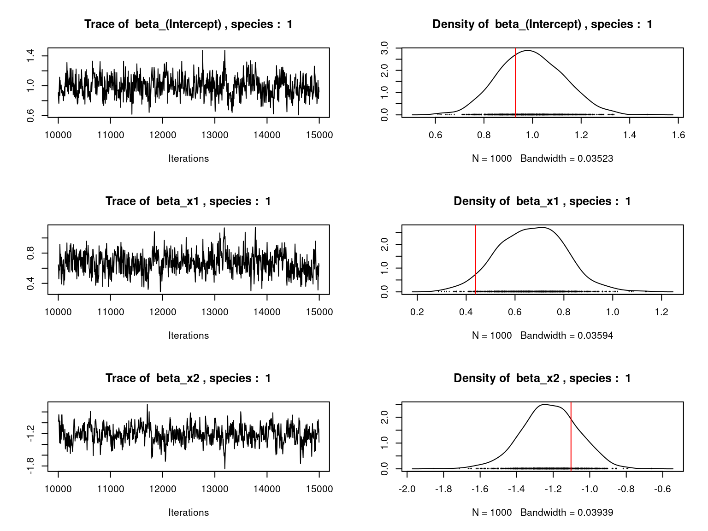 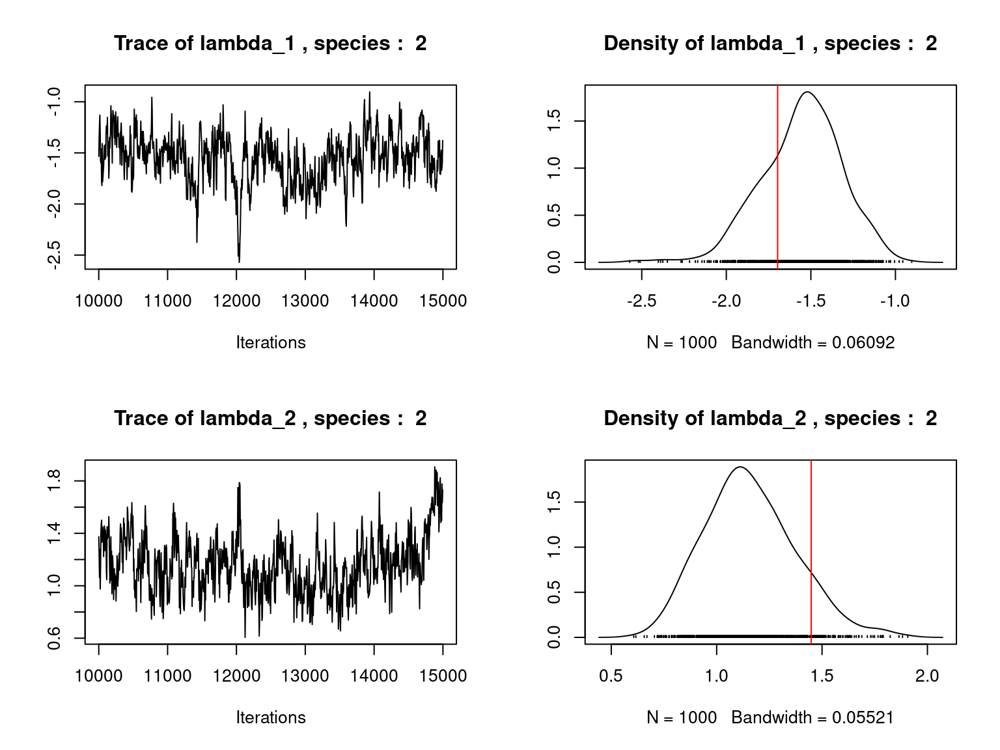
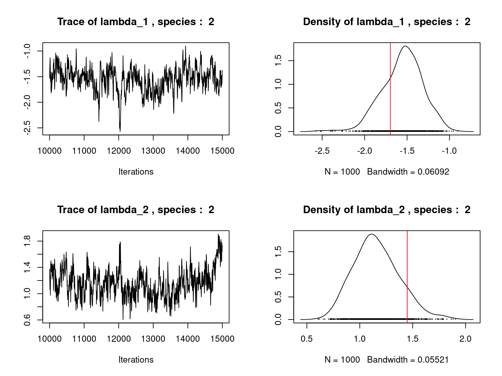 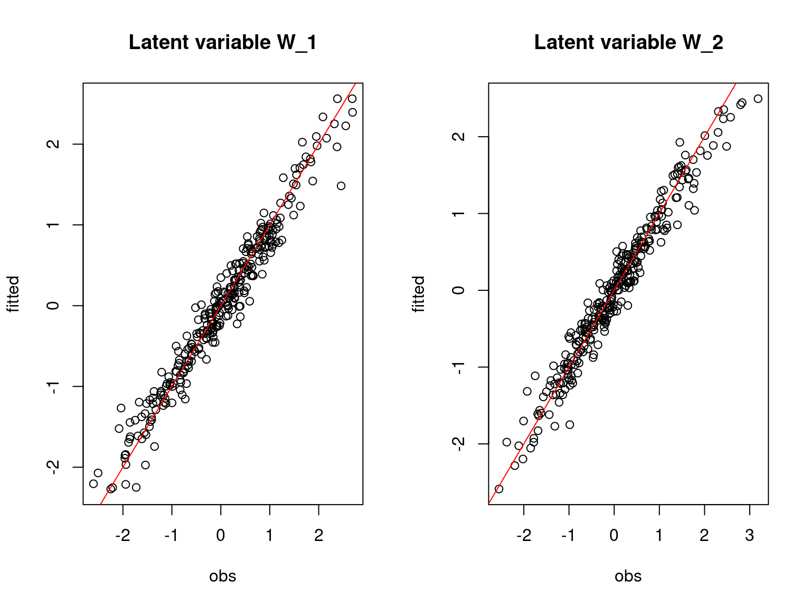
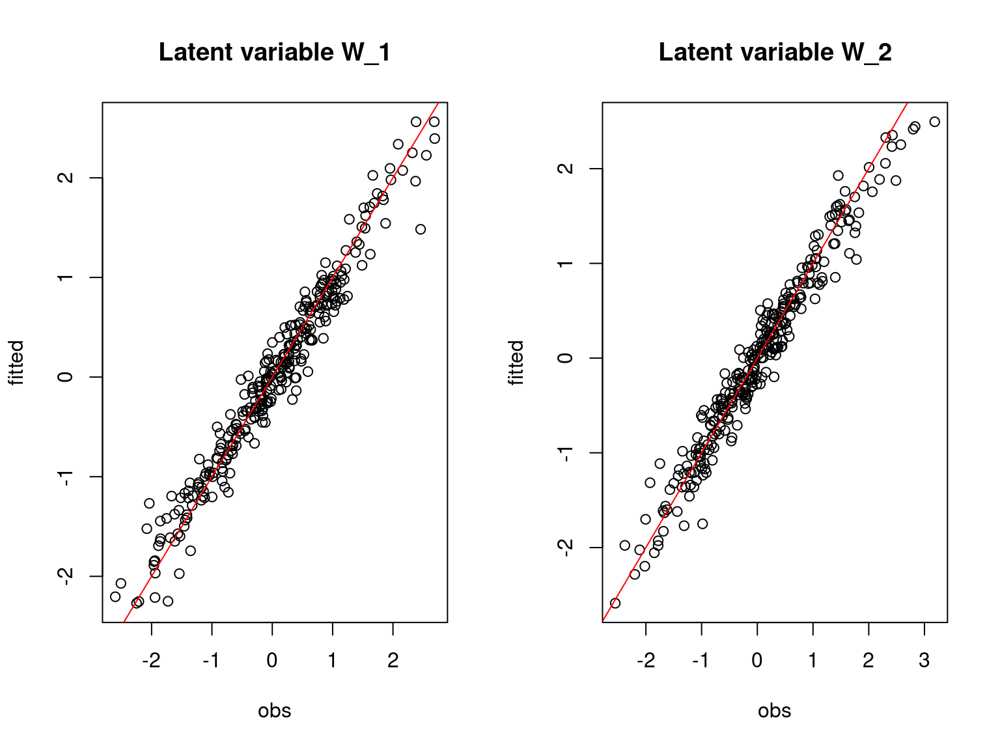

Overall, the traces and the densities of the parameters indicate the convergence of the algorithm. Indeed, we observe on the traces that the values oscillate around averages without showing an upward or downward trend and we see that the densities are quite smooth and for the most part of Gaussian form.
On the above figures, the estimated parameters are close to the expected values if the points are near the red line representing the identity function (\(y=x\)).
4.2 Mosquitos dataset
We fit a binomial joint species distribution model, including latent variables, from the mosquitos dataset using jSDM_binomial_probit() function to perform binomial probit regression.
# Fit the model
T1 <- Sys.time()
mod_jSDM_Mosquitos <- jSDM_binomial_probit(
# Chains
burnin=10000, mcmc=5000, thin=5,
# Response variable
presence_data=PA_Mosquitos,
# Explanatory variables
site_formula=~.,
site_data=Env_Mosquitos,
# Model specification
site_effect="none", n_latent=2,
# Starting values
beta_start=0,
lambda_start=0, W_start=0,
# Priors
mu_beta=0, V_beta = c(10,rep(1,ncol(X_Mosquitos)-1)),
mu_lambda=0, V_lambda=1,
# Various
seed=123, verbose=1)
T2 <- Sys.time()
T_jSDM_Mosquitos <- difftime(T2,T1, units="secs")
save(T_jSDM_Mosquitos, mod_jSDM_Mosquitos,
file="jSDM_Hmsc_cache/jSDM_Mosquitos.RData")4.3 Eucalypts dataset
We fit a binomial joint species distribution model, including latent variables, from the eucalypts dataset using jSDM_binomial_probit() function to perform binomial probit regression.
# Fit the model
T1 <- Sys.time()
mod_jSDM_Eucalypts <- jSDM_binomial_probit(
# Chains
burnin=10000, mcmc=5000, thin=5,
# Response variable
presence_data=PA_Eucalypts,
# Explanatory variables
site_formula=~.,
site_data=Env_Eucalypts,
# Model specification
n_latent=2, site_effect="none",
# Starting values
beta_start=0,
lambda_start=0, W_start=0,
# Priors
mu_beta=0, V_beta = c(10,rep(1,ncol(X_Eucalypts)-1)),
mu_lambda=0, V_lambda=1,
# Various
seed=123, verbose=1)
T2 <- Sys.time()
T_jSDM_Eucalypts <- difftime(T2,T1, units="secs")
save(T_jSDM_Eucalypts, mod_jSDM_Eucalypts,
file="jSDM_Hmsc_cache/jSDM_Eucalypts.RData")4.4 Frogs dataset
We fit a binomial joint species distribution model, including latent variables, from the frogs dataset using jSDM_binomial_probit() function to perform binomial probit regression.
# Fit the model
T1 <- Sys.time()
mod_jSDM_Frogs <- jSDM_binomial_probit(
# Chains
burnin=10000, mcmc=5000, thin=5,
# Response variable
presence_data=as.matrix(PA_Frogs),
# Explanatory variables
site_formula=~.,
site_data=as.data.frame(Env_Frogs),
# Model specification
n_latent=2, site_effect="none",
# Starting values
beta_start=0,
lambda_start=0, W_start=0,
# Priors
mu_beta=0, V_beta = c(10,rep(1,ncol(X_Frogs)-1)),
mu_lambda=0, V_lambda=1,
# Various
seed=123, verbose=1)
T2 <- Sys.time()
T_jSDM_Frogs <- difftime(T2,T1, units="secs")
save(T_jSDM_Frogs, mod_jSDM_Frogs,
file="jSDM_Hmsc_cache/jSDM_Frogs.RData")4.5 Fungi dataset
We fit a binomial joint species distribution model, including latent variables, from the fungi dataset using jSDM_binomial_probit() function to perform binomial probit regression.
# Fit the model
T1 <- Sys.time()
mod_jSDM_Fungi <- jSDM_binomial_probit(
# Chains
burnin=10000, mcmc=5000, thin=5,
# Response variable
presence_data=PA_Fungi,
# Explanatory variables
site_formula=~.,
site_data=Env_Fungi,
# Model specification
n_latent=2, site_effect="none",
# Starting values
beta_start=0,
lambda_start=0, W_start=0,
mu_beta=0, V_beta = c(10,rep(1,ncol(X_Fungi)-1)),
mu_lambda=0, V_lambda=1,
# Various
seed=123, verbose=1)
T2 <- Sys.time()
T_jSDM_Fungi <- difftime(T2,T1, units="secs")
save(T_jSDM_Fungi, mod_jSDM_Fungi,
file="jSDM_Hmsc_cache/jSDM_Fungi.RData")4.6 Birds dataset
We fit a binomial joint species distribution model including latent variables, from the birds dataset using jSDM_binomial_probit() function to perform binomial probit regression.
# Birds dataset
data("birds")
PA_Birds <- birds[,1:158]
# Remove species with less than 5 presences
rare_sp <- which(apply(PA_Birds>0, 2, sum) < 5)
PA_Birds <- PA_Birds[, -rare_sp]
# Transform presence-absence data with multiple visits per site into binary data
PA_Birds[PA_Birds > 0] <- 1
# Scale environmental variables
Env_Birds <- data.frame(scale(birds[,c("elev","rlength","forest")]))
# Fit the model
T1 <- Sys.time()
mod_jSDM_Birds <- jSDM_binomial_probit(
# Chains
burnin=10000, mcmc=5000, thin=5,
# Response variable
presence_data=PA_Birds,
# Explanatory variables
site_formula=~.,
site_data=Env_Birds,
# Model specification
n_latent=2, site_effect="none",
# Starting values
beta_start=0,
lambda_start=0, W_start=0,
# Priors
mu_beta=0, V_beta = c(10,rep(1,ncol(X_Birds)-1)),
mu_lambda=0, V_lambda=1,
# Various
seed=123, verbose=1)
T2 <- Sys.time()
T_jSDM_Birds <- difftime(T2,T1, units="secs")
save(T_jSDM_Birds, mod_jSDM_Birds,
file="jSDM_Hmsc_cache/jSDM_Birds.RData")4.7 Mites dataset
We fit a joint species distribution model, including latent variables, from the mites abundance dataset using jSDM_poisson_log() function to perform a poisson log-linear regression.
# Fit the model
T1 <- Sys.time()
mod_jSDM_Mites <- jSDM_poisson_log(
# Chains
burnin=10000, mcmc=5000, thin=5,
# Response variable
count_data=PA_Mites,
# Explanatory variables
site_formula=~.,
site_data=Env_Mites,
# Model specification
n_latent=2, site_effect="none",
# Starting values
beta_start=0,
lambda_start=0, W_start=0,
# Priors
mu_beta=0, V_beta=c(10,rep(1,ncol(X_Mites)-1)),
mu_lambda=0, V_lambda=1,
# Various
ropt=0.44,
seed=123, verbose=1)
T2 <- Sys.time()
T_jSDM_Mites <- difftime(T2,T1, units="secs")
save(T_jSDM_Mites, mod_jSDM_Mites,
file="jSDM_Hmsc_cache/jSDM_Mites.RData")5 Comparison
Then we compare the computation time and the results obtained with each package.
5.1 Computation time and deviance
| Simulated | Mosquitos | Eucalypts | Frogs | Fungi | Birds | Mites | |
|---|---|---|---|---|---|---|---|
| Computation time Hmsc (secondes) | 641 | 283 | 171 | 125 | 197 | 1314 | 612 |
| Computation time jSDM (secondes) | 95 | 12 | 23 | 5 | 23 | 91 | 67 |
| Deviance Hmsc | 15421 | 1768 | 2656 | 353 | 1926 | 14641 | 7047 |
| Deviance jSDM | 15201 | 1267 | 1846 | 211 | 1377 | 14117 | 6812 |
|
|
|
|
|
|
|
jSDM is 7 to 28 times faster than Hmsc.
5.2 Root-Mean-Square Error (RMSE) for simulated data
Computed for the probabilities of presences \(\theta_{ij}\) on the simulated data-set.
| Hmsc | jSDM | |
|---|---|---|
| RMSE | 0.073 | 0.072 |
5.3 Estimated Parameters
We plot the parameters estimated with jSDM against those estimated with Hmsc to compare the results obtained with both packages.
 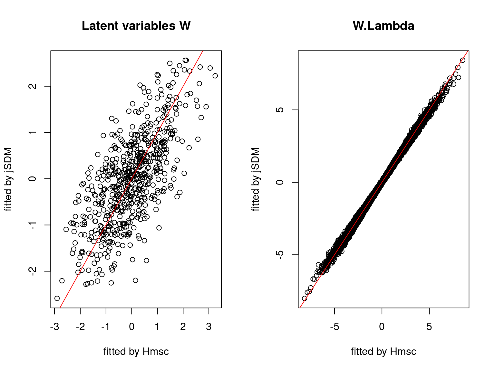
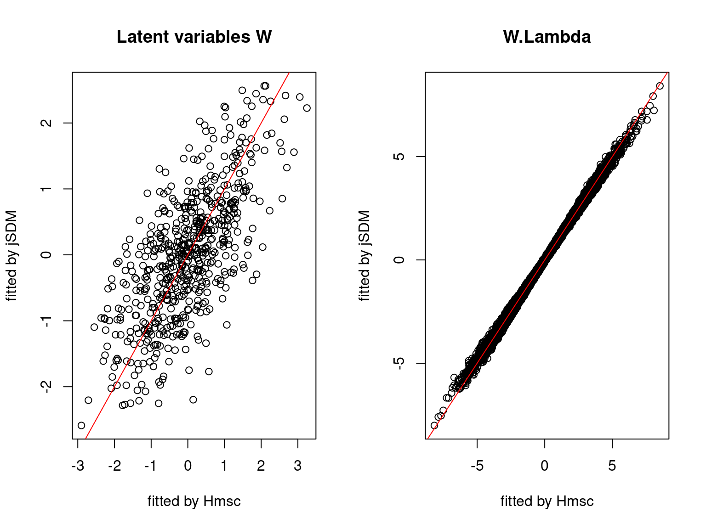

 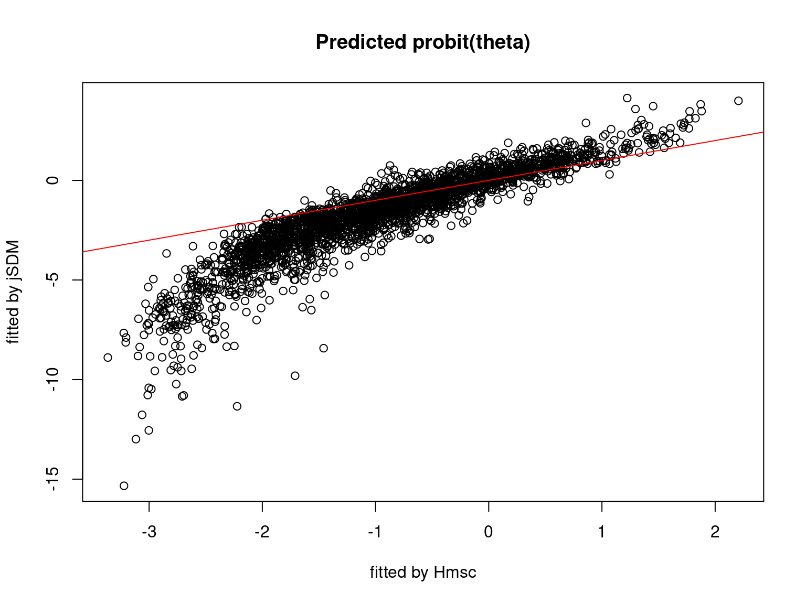
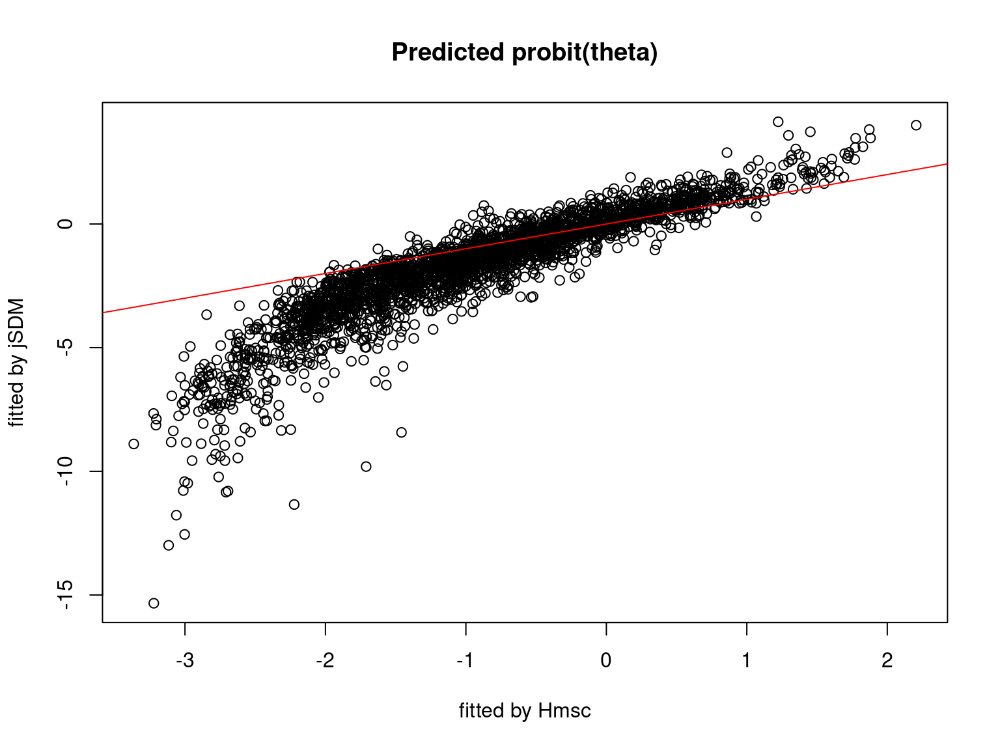
 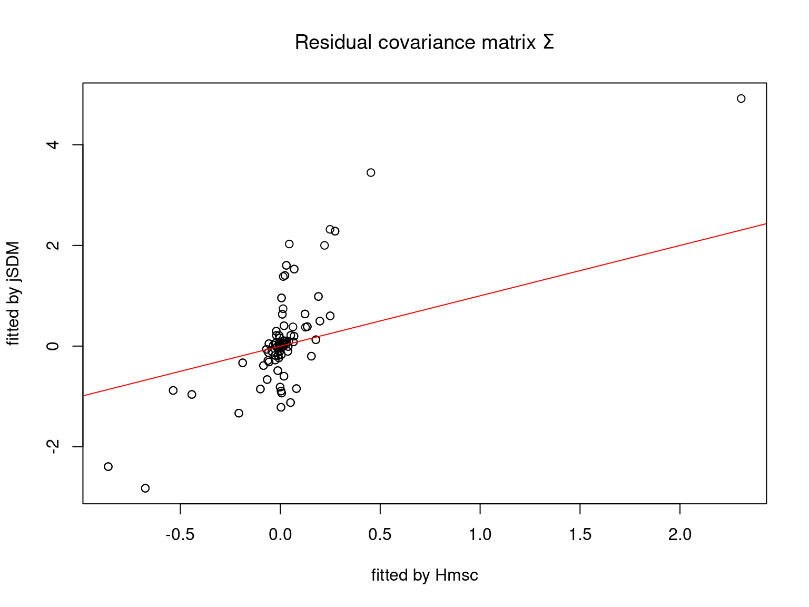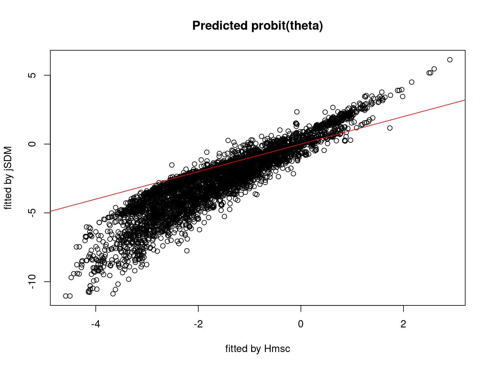
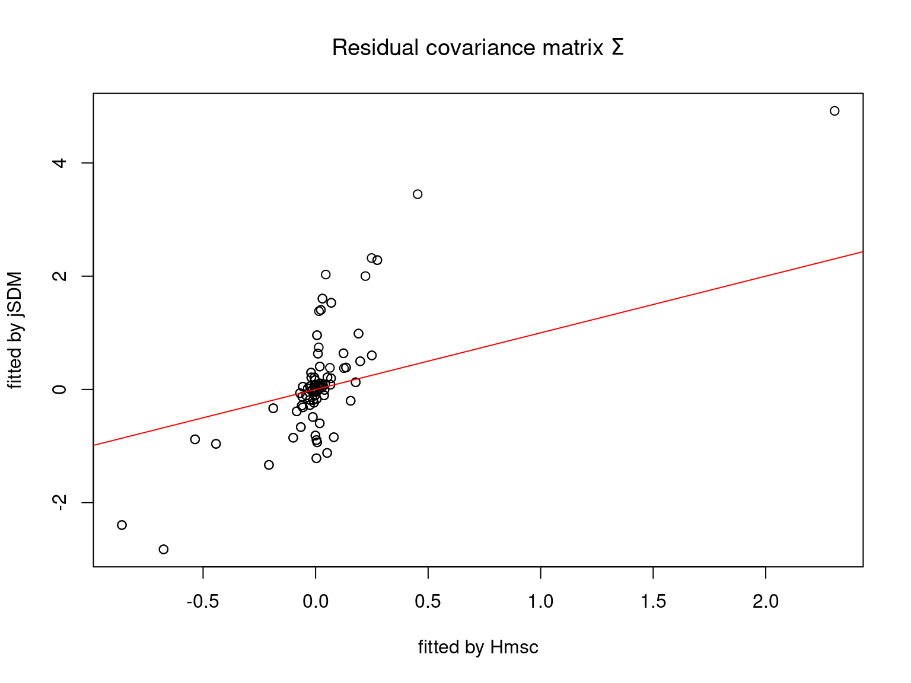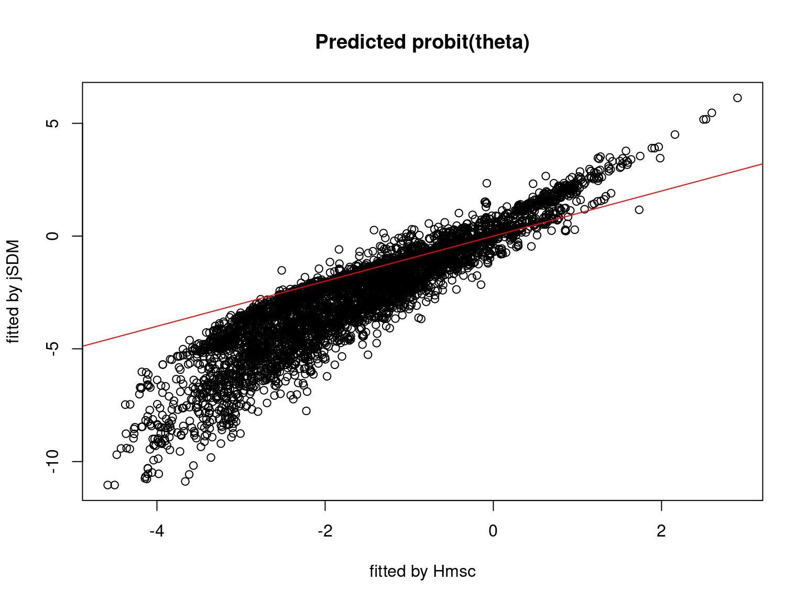 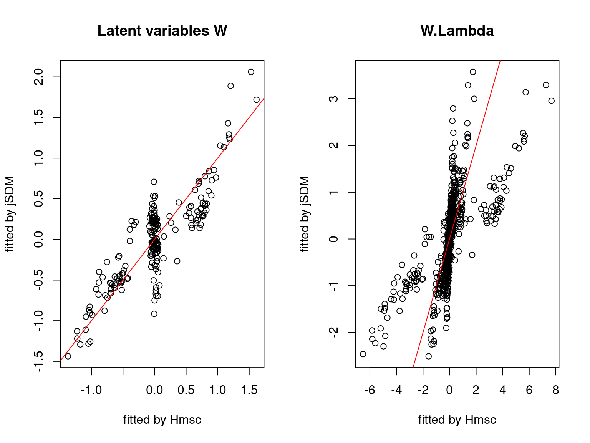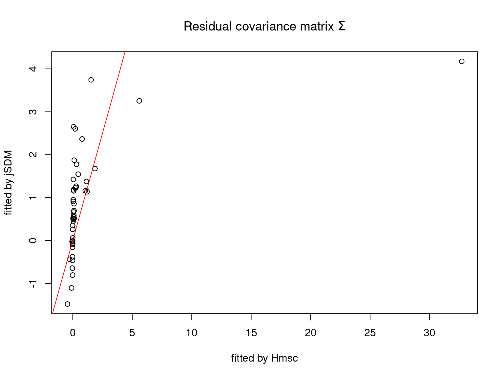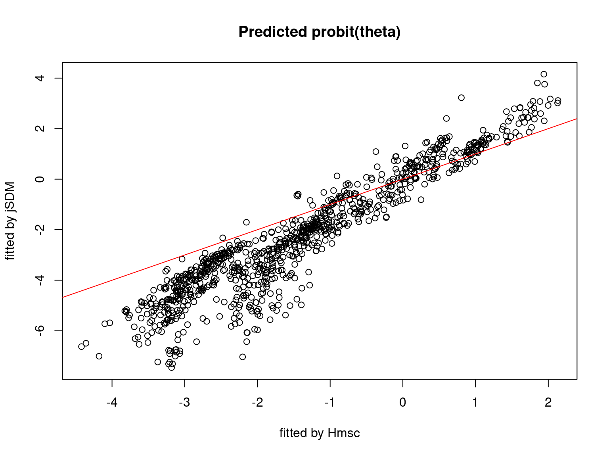
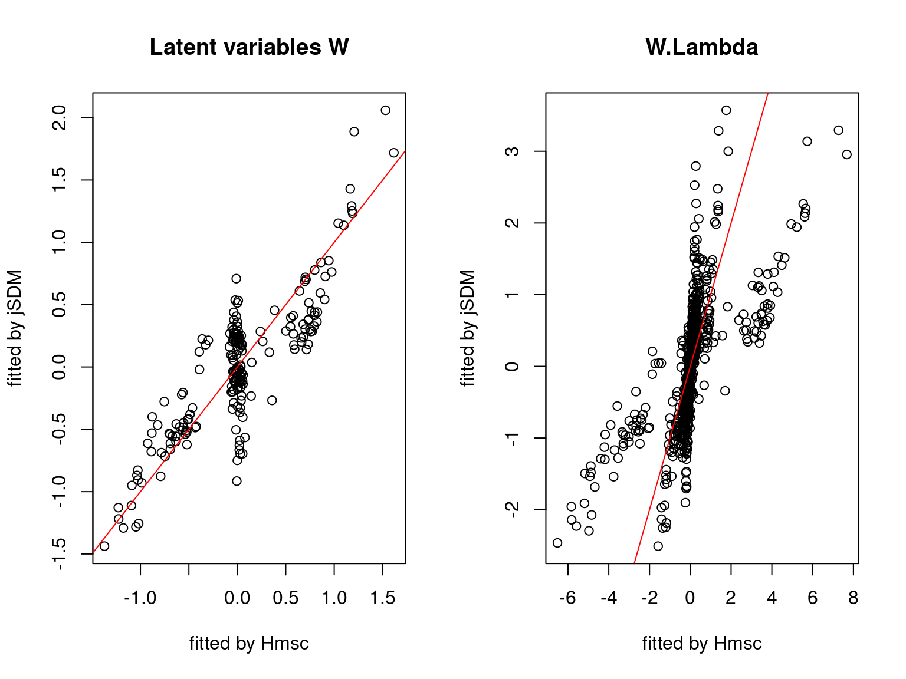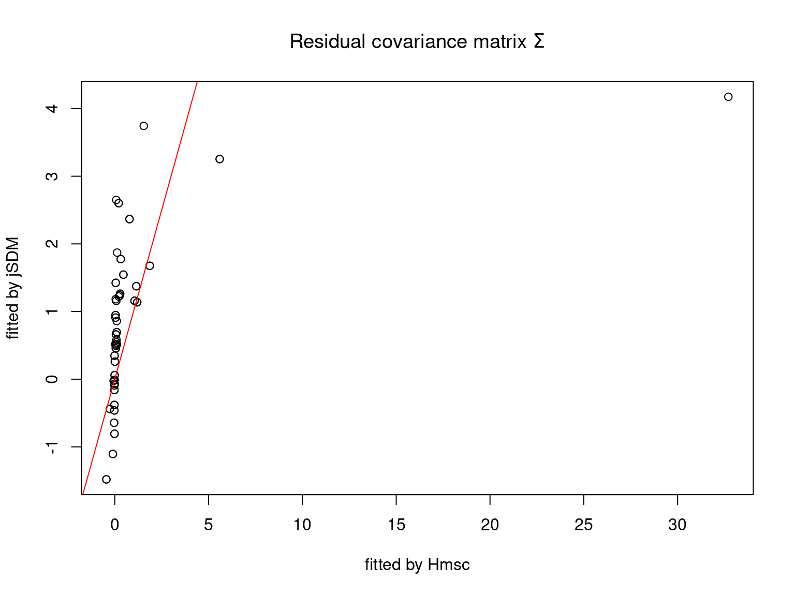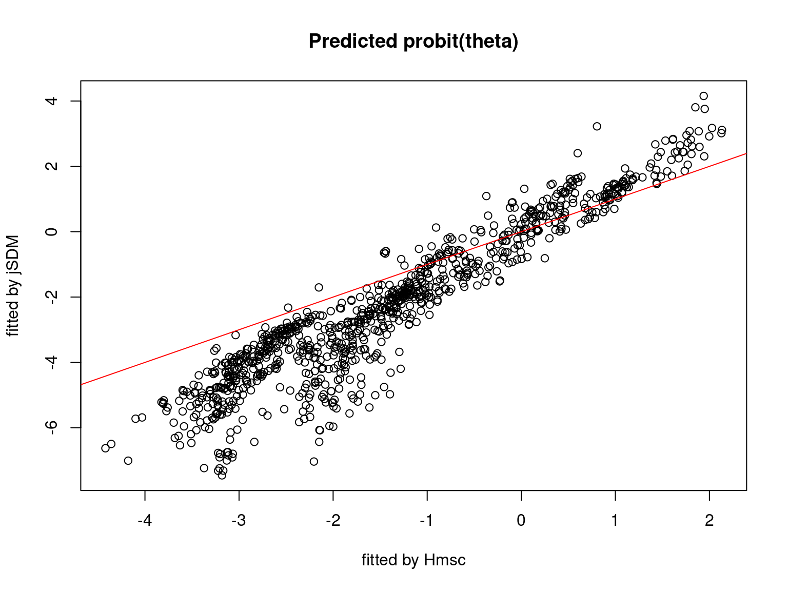


5.3.7 Mites dataset


On the figures above, the parameters estimated with jSDM are close to those obtained with Hmsc if the points are near the red line representing the identity function (\(y=x\)).